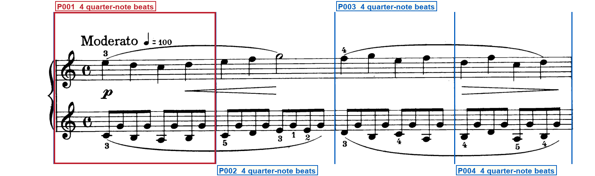
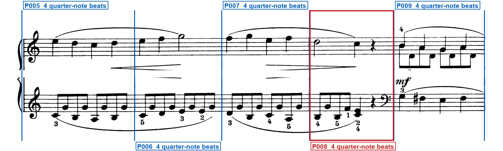
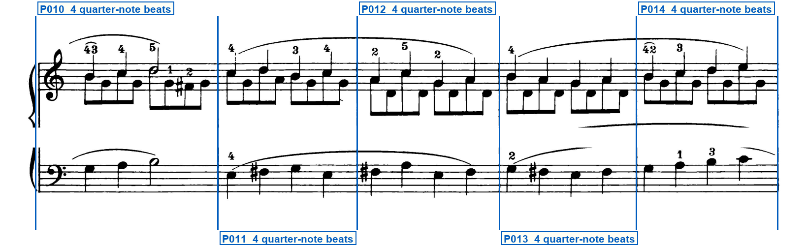
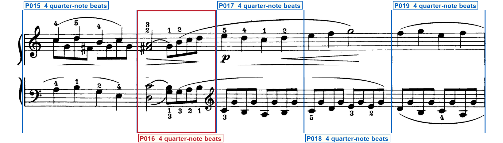
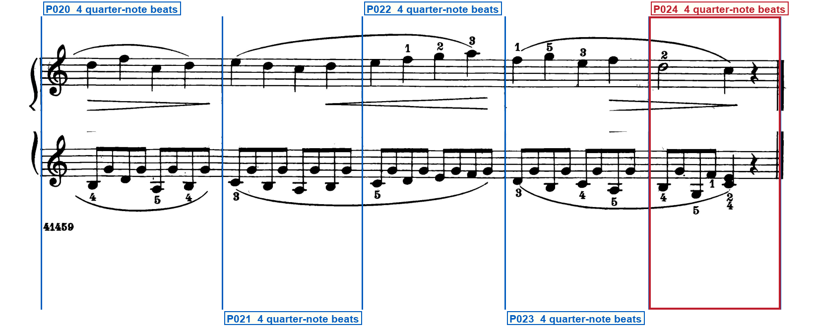

Printed-frame check
schumann_op68_03_humming_song
Blue regions are silent: verify that they are ordinary bars. Red regions have one compact label directly below their system. Blue vertical lines must sit on printed barlines. Labels must remain outside the music.
System 1 — 4 printed regions

- P001 — OPENING SIGNATURE — At the left of both staves
System 2 — 5 printed regions

- P008 — CLEF CHANGE — Immediately left of the right barline on the lower staff · staff 2: treble clef → bass clef; glyph Immediately left of the right barline of P008, after the lower-staff eighth rest; effective P009; first governed event: The first lower-staff quarter of P009, under mezzo-forte
System 3 — 5 printed regions

System 4 — 5 printed regions

- P016 — CLEF CHANGE — Immediately left of the right barline on the lower staff · staff 2: bass clef → treble clef; glyph Immediately left of the right barline of P016, after the four sixteenths that close the turn; effective P017; first governed event: The first left-hand eighth of P017
System 5 — 5 printed regions

- P024 — FINAL BARLINE — At the right barline
Full clef inventory
Both staves open in treble clef. Two later left-hand clef changes are printed: bass at the end of P008, then treble again at the end of P016. System-start clef reprints on systems 2 through 5 are not additional changes, and no other clef glyphs are visible.
Opening clefs
- Staff 1: treble clef — Opening of system 1, upper staff, left of the common-time C
- Staff 2: treble clef — Opening of system 1, lower staff, left of the common-time C
Printed clef changes (2)
- P008, staff 2: bass clef — P008, staff 2: treble clef to bass clef at the region end, immediately before the barline
- P016, staff 2: treble clef — P016, staff 2: bass clef to treble clef at the region end, immediately before the barline
Verifier notes and special checks
The page is five complete grand-staff systems in common time: four bars, then four systems of five, totalling twenty-four complete bars. Both hands open in treble clef with a common-time C and no key signature; there is no pickup, repeat, ending, or meter change. A bass clef is printed on the lower staff at the end of P008, immediately before the barline, and first governs the mezzo-forte lower-staff quarters of P009. A treble clef returns on the lower staff at the end of P016, immediately before the barline, and first governs the left-hand eighths of P017. System-start clefs on later systems are reprints of those already in force. P024 is a complete common-time close under a thin-plus-thick final barline with no repeat dots. Proposed region counts, barline x-coordinates, capacities, and the two clef changes match the printed pixels.
- System 1 opening: Do both staves open in treble clef with a common-time C and no key signature, and is P001 a complete bar rather than a pickup? Yes. Both staves show a G clef and C; no sharps or flats; P001 is four complete quarter notes under piano.
- System 2 P008/P009 lower staff: Is the bass clef printed left of the P008/P009 barline, with the first governed notes in P009? Yes. The glyph sits after the P008 eighth rest and immediately left of the barline at x=1283. The first lower-staff quarter of P009 is to the right of that barline under mezzo-forte.
- System 3 opening lower staff: Is the system-start bass clef a reprint rather than a new change? Yes. It reprints the bass clef already in force from P009; not an additional change.
- System 4 P016/P017 lower staff: Is the treble-clef return printed left of the P016/P017 barline, with the first governed notes in P017? Yes. The glyph sits after the four sixteenths of the P016 turn and immediately left of the barline at x=704. The first left-hand eighth of P017 is to the right of that barline.
- System 5 opening and close: Are the system-start treble clefs reprints, and is the last barline a thin-plus-thick final barline without repeat dots? Yes. Both staves reprint treble. P024 is a complete bar closed by a thin-plus-thick final barline with no repeat dots.
Your verification checks
- Do all staves, notes, rests, slurs and other musical marks fit completely inside the page?Expected: Yes
- Do the blue lines match every printed barline, giving 24 printed regions?Expected: Yes
- Do the compact red labels state every visible repeat, ending, route mark, special barline, partial, meter/key change and clef change—and are all unlabeled blue regions truly normal?Expected: Yes
- Are all region labels outside the printed system, with no ending, repeat, clef, note or mark hidden?Expected: Yes
- Does the clef list state each opening clef and every visible clef change?Expected: Yes
Approve only after every answer is Yes. Tell the Orchestrator: Frame approved or Frame rejected with the system number.